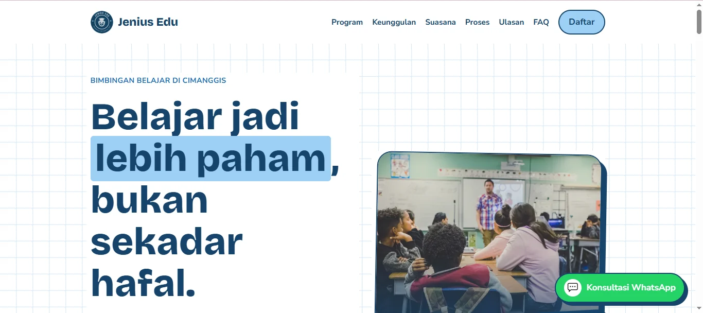
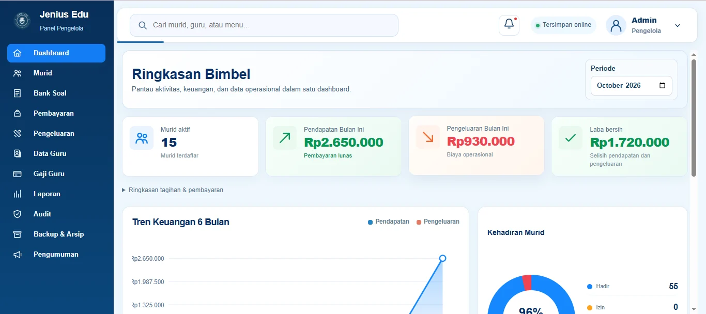
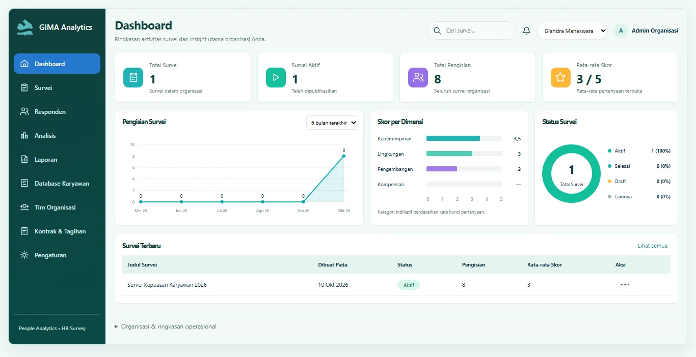

Jenius Education — Website Promosi
Informasi program dan jalur konsultasi bagi calon orang tua serta siswa.
Lihat studi kasus ↗DIGITAL SOLUTIONS / FOR CLIENTS
Jelajahi contoh pekerjaan saya di bidang pendidikan, pengelolaan operasional, serta HR Survey dan People Analytics.

Informasi program dan jalur konsultasi bagi calon orang tua serta siswa.
Lihat studi kasus ↗
Administrasi murid, absensi, pembayaran, laporan, dan panel pengguna.
Lihat studi kasus ↗
Survei karyawan, analisis engagement, visualisasi data, dan laporan SDM.
Lihat studi kasus ↗People Analytics, HR Survey, dashboard, pelaporan, dan solusi website sesuai kebutuhan.
Diskusikan kebutuhan ↗LAYANAN & PENDEKATAN
Survei engagement, pengolahan respons, dashboard hasil, dan pelaporan untuk mendukung evaluasi SDM.
Pengelolaan data, monitoring administrasi, dan ringkasan informasi yang mudah dipahami.
Website responsif untuk memperkenalkan layanan, program, dan informasi bisnis.
Diskusi kebutuhan → pemetaan solusi → rancangan → implementasi dan evaluasi.
Screenshot aplikasi merupakan contoh proyek; angka dashboard dapat berupa data simulasi.